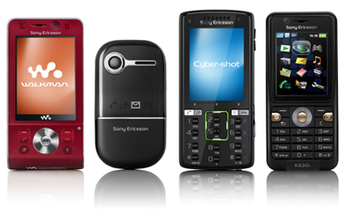
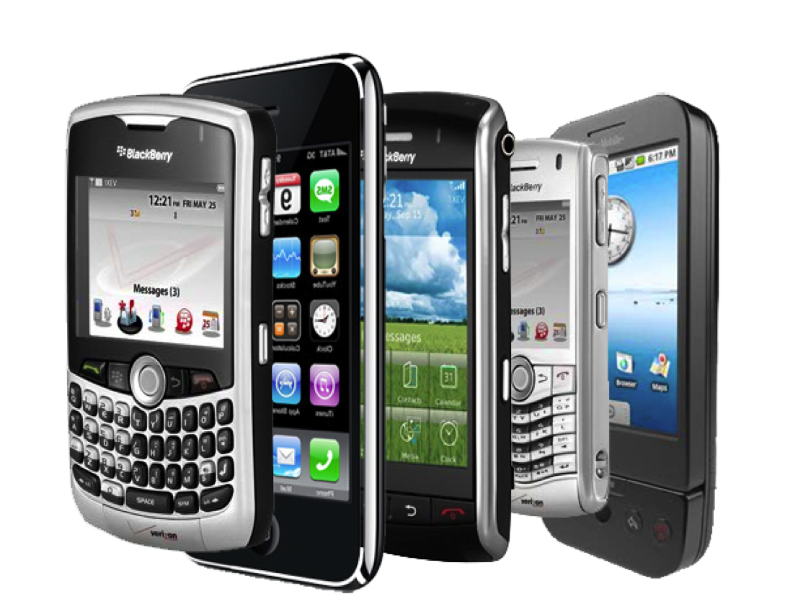

La historia de la telefonía celular se remonta a los años 40s, cuando motivada por la segunda guerra mundial, la empresa Motorola desarrollo un teléfono móvil llamado Handie Talkie H12-16, este aparato usaba ondas de radio que para ese momento no superaban los 60 MHz.

Historia y desarrollo de los móviles, clasificación generaciones:
Primera generación 1G
El primer teléfono móvil fue el NMT 450 (Nordic Mobile Telephony 450 MHz), desarrollado por Ericsson, este aparato ,todavía usaba las señales de radio con modulación de frecuencia.
Para esta época los teléfonos todavía eran aparatos grandes y pesados, pero constituían un gran avance en términos de comunicación móvil.
Posteriormente se avanzó a frecuencias de radio (900 MHz) superiores a las ya conocidas.
Además del sistema NTM se desarrollaron simultáneamente otros sistemas como AMPS (Advanced Mobile Phone System) en EEUU y TACS (Total Access Comunication System).

Segunda Generación 2G
La segunda generación nace a principios de los años 90s, utiliza sistemas GSM, IS-136, iDEN e IS-95 con frecuencias de 900 y 1800 MHz.
En esta generación se abandona el uso de ondas de radio y se da paso a la era digital de las comunicaciones. Esto ofrece grandes ventajas como la calidad de voz, mejora en la seguridad y bajos costos de operación.
Se establece como estándar el GSM (Global Sistem for Mobile communications o Groupe Spécial Mobile ). Este estándar da paso con el tiempo al CDMA, que incluia nuevas ventajas sobre su predecesor. Esta etapa de transición en la telefonía celular se le como generación 2.5.

Tercera generación 3G
La tercera generación se caracteriza por ampliar características como ancho de banda y manejo de datos y ofrecer nuevos servicios como la teleconferencia, televisión , acceso pleno a internet y descarga de archivos.
En este momento el desarrollo tecnológico ya posibilita un sistema totalmente nuevo: UMTS (Universal Mobile Telecommunications System).
Actualmente el sistema sigue siendo desarrollado, tanto en términos de tecnología y de mercadeo.
